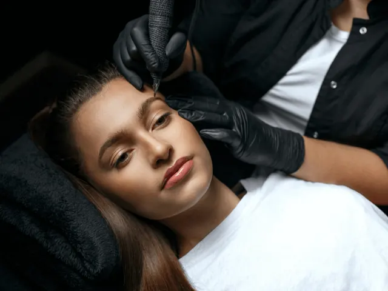
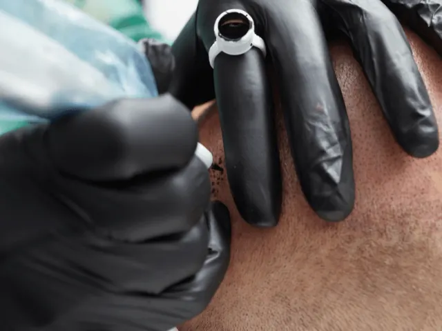

De ins en outs van permanente make-up in Nijmegen!
Gepubliceerd op 15 september 2023, bijgewerkt op 26 februari 2024
Onderdeel van de gids Permanente make-up in Nijmegen

In het hart van Nijmegen bevindt zich een wereld van betoverende schoonheid, waar permanente make-up de sleutel is tot een dagelijks stralende look zonder de moeite van dagelijkse applicaties. Deze innovatieve vorm van cosmetica, die je verlost van uitgelopen mascara en vervaagde eyeliner, biedt een blijvende oplossing voor hen die streven naar perfectie. Door de handen van deskundige professionals transformeert permanente make-up je alledaagse look en brengt je natuurlijke schoonheid naar voren. Hier is alles wat je moet weten over deze betoverende kunst in Nijmegen.
De magie van permanente make-up in het bruisende Nijmegen
Of je nu op zoek bent naar perfect gevormde wenkbrauwen of verleidelijke eyeliner, Nijmegen heeft talloze opties om je natuurlijke schoonheid te versterken. Met permanente make-up hoef je je nooit meer zorgen te maken over uitgelopen mascara, smudged eyeliner of het bijwerken van je make-up gedurende de dag. Het is als een toverstaf die je elke ochtend een moeiteloze, betoverende look geeft. Dus, laten we eens kijken wat je moet weten over permanente make-up!
De kunst van permanent mooi zijn: wat houdt permanente make-up in?
Permanente make-up is geen gewoon potje make-up dat je in de winkel koopt. Het is een kunstvorm die wordt uitgevoerd door ervaren professionals. Bij permanente make-up worden pigmenten voorzichtig onder de huid aangebracht om een langdurig en natuurlijk resultaat te creëren. Het proces omvat gedetailleerde technieken, zoals microblading voor eyeliner tatoeages, de perfecte wenkbrauwen en lippen die altijd klaar zijn om te kussen. Het beste van alles is dat permanente make-up kan worden aangepast aan je specifieke wensen en kenmerken, zodat je een look krijgt die helemaal bij je past.

Durf anders te zijn: voordelen en overwegingen van permanente make-up
Permanente make-up brengt talloze voordelen met zich mee. Ten eerste bespaart het je kostbare tijd in je dagelijkse schoonheidsroutine. Geen gehaast gedoe meer voor de spiegel om je eyeliner perfect te krijgen of je wenkbrauwen bij te tekenen. Ten tweede kan permanente make-up helpen om eventuele onvolkomenheden of asymmetrie in het gezicht te corrigeren, waardoor je je zelfverzekerder en mooier voelt. Natuurlijk is het belangrijk om de juiste salon te kiezen en goed geïnformeerd te zijn over het proces en de nazorg. Het is tenslotte een vrij permanente beslissing. Maar als je de sprong waagt, zul je merken dat permanente make-up een geweldige manier is om jezelf te uiten en je unieke schoonheid te omarmen.
Permanente make-up in Nijmegen: je sleutel tot moeiteloze schoonheid
In Nijmegen is de wereld van permanente make-up springlevend en bruist van de mogelijkheden. Je zult een scala aan getalenteerde professionals vinden die klaar staan om je schoonheidsdromen werkelijkheid te maken. Van gezellige boetieks tot luxe salons, Nijmegen heeft voor elk wat wils. Dus waar wacht je nog op? Maak een afspraak bij een van de vele permanente make-up specialisten en laat je betoveren door de magie van permanente make-up in Nijmegen. Het is tijd om je natuurlijke schoonheid te omarmen en moeiteloos te stralen!

Vind je make-up kunstenaar in Nijmegen
MP-Brows
Bij MP-Brows kun je rekenen op een professionele en kwalitatieve permanente make-up ervaring. Met positieve reviews van tevreden klanten en een breed scala aan behandelingen, zoals wenkbrauw- en lip-permanentie, staat deze kliniek bekend om hun precisie en oog voor detail. Zeker de moeite waard.
Salon Beautify
Salon Beautify biedt hoogwaardige permanente make-up behandelingen met een focus op klanttevredenheid. Met lovende recensies en een breed scala aan mogelijkheden, zoals eyeliner-tatoeages en microblading, zorgen ze ervoor dat elke klant de gewenste look bereikt.
Brows by Ellis
Brows by Ellis is gespecialiseerd in het creëren van perfecte wenkbrauwen met permanente make-up. Met enthousiaste klantreviews en een gepersonaliseerde benadering, zorgen ze ervoor dat elke klant met prachtig gevormde wenkbrauwen de salon verlaat.
Instituut Mademoiselle
Instituut Mademoiselle biedt professionele permanente make-up behandelingen met de nadruk op natuurlijke resultaten. Met positieve recensies en ervaren professionals, streven ze ernaar om elke klant een subtiele en verfijnde look te geven.
Ontdek de betovering van permanente make-up in Nijmegen
In Nijmegen vind je een levendige wereld als het om permanente make-up gaat. Het is een plek waar kunstenaars je helpen om je natuurlijke schoonheid naar nieuwe hoogten te tillen. Met een breed scala aan mogelijkheden en getalenteerde professionals, is permanente make-up de sleutel tot eindeloze schoonheid, en dat allemaal in Nijmegen.
OVERZICHT PERMANENTE MAKE-UP ARTISTS
BEKIJKPermanente make-up in Nijmegen
Zin om te beginnen? In onze bedrijvengids vind je alle 3 studio's in Nijmegen, met openingstijden, kenmerken en een kaart.
Bekijk alle 3 studio's in Nijmegen
Heb je zelf een studio? Laat je hier uitlichten.